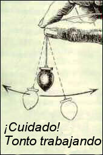
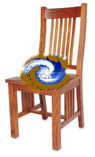

Oscile ese péndulo
El lector Steve Peoria de Arizona comparte un evento con nosotros:
Tuve una experiencia que me gustaría compartir con usted, y una pregunta. He disfrutado su sitio y la información que brinda. Me ha ayudado a convertirme en un escéptico más informado y a ser más critico en mi forma de pensar. Hoy tuve esta experiencia:
Trabajo como fabricante para un buen amigo mío en su tornería. Construimos o modificamos vehículos de alto rendimiento de todo tipo y construimos toda clase de cosas de metal.
Mi amigo, Mike, ha estado sintiendo las presiones de ser el dueño de un negocio pequeño y se ha dedicado a hacer que las cosas funcionen de forma tan eficiente como sea posible. Estaba en el negocio hoy (sábado) trabajando en un proyecto personal cuando Mike y su novia aparecieron con una mujer de la que obviamente eran amigos. Dijo que ella estaba allí para ayudar a que el negocio fuera más eficiente y me la presentó. Estaba terminando mi trabajo en la PC cuando escuché al pasar lo que ella iba a hacer allí: liberar al edificio, al negocio y a todas las personas presentes de toda la energía negativa y reemplazarla con energía buena.
Había escuchado a Mike hablar de su amiga psíquica, y era ella. Mike le había dado información sobre que yo era un amigo que había tenido su propio negocio y que hacía poco había llegado a trabajar con él. Empezó a decirme que podía ver que mi aura estaba llena de energía negativa y que podía librarme de ella. Sonreí y dije “Qué bueno” y pedí permiso para retirarme. Instantes más tarde, la novia de mike vino al negocio para que volviera a la oficina y participara en la limpieza, así que fui. La mujer presentó entonces más información sobre que yo había tenido tiempos difíciles hacía poco, etc., etc., etc. Esta información podría deducirse con facilidad de las historias que Mike le había contado previamente sobre mí. Usó sus manos para hacer algún tipo de “revisión” de mi cabeza y mi cuerpo, concentrándose en su mayor parte en mi cabeza, mi corazón, mi estómago y mis genitales, mientras murmuraba todo el tiempo en voz baja y daba sugerencias sobre las “sensaciones que yo podía o no tener”.
Todo el tiempo agitaba un amuleto de color ámbar que pendía de una cadenita. Pensé que era sólo un hábito nervioso pero luego me di cuenta de que no sólo lo estaba balanceando. Era su forma automática de obtener respuestas de los espíritus a los que estaba pidiéndoles información.
Luego de que mi revisión terminó bien, fue a trabajar con la parte zahorí de su exhibición. Empezó en la puerta del frente y se movió con rapidez, trazando varios caminos y haciéndole preguntas a “alguien” y diciéndonos lo que ellos pensaban que estaba mal. Salió la gema oscilante y volvió el murmullo. Esta vez empezó a contar números en voz alta y llegó a la conclusión de que 300 o más espíritus indios (la tienda está en Tempe, Arizona) están atrapados aquí y están alterando la energía.
Le pidió a los ángeles que reunieran a esas almas perdidas y les mostraran la luz. No pude evitar sonreír y pensar cuán ridículo era todo eso. Así que los ángeles hicieron su trabajo y ella volvió a revisar el área con sus varillas de zahorí similares a agujas de tejer dobladas. ¡Epa! ¡Todavía faltaba algo! Encontró que había una corriente subterránea que fue contaminada con venenos. Mike reconoció que se había averiguado que una industria que había estado en el área había estado envenenando el agua subterránea a lo largo de los años. Esta vez ella llamó a hadas y gnomos para ayudar a los ángeles. Puso esta situación en algo así como una “cuarentena autorregulada” para que no causara más problemas.
Como si todo esto fuera poco, colocó un “vórtice” en la silla de la oficina para asegurarse de que el ocupante de la silla estaría acompañado de buena energía. Se monitoreaba a sí mismo de modo sabría quién se sentaba allí y lo que necesitaba en el momento adecuado. Y ubicó un “puesto de control” en todas las entradas para que si la gente traía energía negativa, la dejara en la puerta con la posibilidad de recogerla al salir si así lo deseaba.
Todo el tiempo que su mujer presentó su espectáculo, Mike y su novia exclamaban ¡ohs! y ¡ahs! ante los hallazgos y sus soluciones. Increíble que dos seres humanos adultos y universitarios creyeran estas estupideces.
Encontré una tarjeta que la mujer le dejó a la novia de Mike. Dice: “The Angel Store, Consejería espiritual certificada, clases angélicas y lecturas angélicas, (dirección y número de suite), Phoenix, Arizona, www.Theangelstore.net. ¡Junto con la tarjeta había una nota que tenía el nombre de Tyler el psíquico de mascotas y una rebaja especial del 50% en rabdomancia!
Así que, señor Randi, mi pregunta es ésta: ¿Tengo que cachetear a mis amigos con la realidad o respetar su ignorancia? Todos los demás con los que trato reciben una fuerte dosis de verdad de mi parte y una sugerencia de que visiten los archivos de usted. No pude evitar compartir esta historia con usted.
Steve, sospecho que yo los sacudiría a ambos muy fuerte y les diría que volvieran a la realidad. Sí, intente razonar con ellos, pero si no funciona, abandone los intentos posteriores. Un creyente confirmado y dedicado siempre será eso, y empeñarse usando la lógica y la razón no lo ayudará en lo más mínimo…
Una cuestión de gusto
El lector Gary Heayes del Reino Unido escribe:
Como lector regular y un ávido fanático de su sitio, pensé que podría interesarle un artículo reciente sobre el poder de las expectativas del cerebro y su influencia en las percepciones del gusto. Parece el momento adecuado, dada su reciente cobertura de la “pinza magnética para vino”. Este artículo es del periódico británico Independent, y muestra cuán poderosa puede ser la mera expectativa de una diferencia de sabor.
Cuando [a los sujetos de la prueba] se les pidió gustar a ciegas, no mostraron preferencias. Sin embargo, cuando se les mostró a los participantes los logos de las compañías antes de beber, la etiqueta de Coca Cola, la más famosa de las dos, tuvo un impacto dramático: tres cuartos de los degustadores declararon que preferían la Coca Cola.
Al mismo tiempo los investigadores hallaron que la etiqueta de Coca Cola estimulaba un gran aumento en la actividad de las partes del cerebro asociadas con el conocimiento cultural, la memoria y la autoimagen, de tal forma que los científicos podían usar exploraciones cerebrales para predecir cuál bebida preferiría un individuo dado. La etiqueta de Pepsi no produjo tal aumento.
Todo esto sugiere que aunque el imán para vino puede no alterar físicamente el vino, su presencia altera indirectamente la química cerebral de los bebedores aumentando sus expectativas. ¡Sospecho que la cuerda “cabalística” roja atada en torno al cuello de la botella tendría efectos similares para Madonna y sus amigos!
Tenga en cuenta, aunque la investigación científica señala con certeza los procesos del cerebro, sospecho que el efecto que describen ha sido conocido por los magos hábiles durante siglos.
Como ha usted sugerido, parece muy probable que cuando el degustador no vea la pinza mágica en el cuello de la botella, la diferencia de sabor desaparecerá. ¿Quizá los fulanos de la pinza para vino querrán ofrecerle a sus lectores algunas muestras de su producto para que podamos realizar algunas pruebas independientes doblemente ciegas? En lo personal no tengo objeción a bajar unas cuantas botellas de tinto en interés de la ciencia.
La dedicación del señor Heayers a la investigación científica y los sacrificios que está dispuesto a hacer para adquirir nuevos conocimientos sólo nos produce admiración. El lector William Rentfrow, Consultor Principal de StrataCom, ha encontrado una versión más tonta (¿es posible?) de la misma afirmación, aunque por medio de una versión diferente de pseudociencia:
Viajo por trabajo y la semana pasada estaba matando el tiempo durante el vuelo leyendo el catálogo del centro comercial Sky Mall. No le sorprenderá saber que el disparate de la “Pinza para Vino” se está extendiendo. Ahora hay un producto llamado “The Vintage Express”, que es sencillamente otra pinza para vino con una explicación algo distinta. La mejor parte es que viene con “The Shooter Buddy”, que supuestamente es capaz de recrear veinte años de añejamiento para el licor fino. Sólo una nota: los anglohablantes que disfrutan un escocés de 20 años, etc., por lo general no se refieren a esta bebida como “shooter”. Citando:
¡El Acelerador de Añejamiento Vintage Express añeja las bebidas 10 años en 10 segundos! El campo magnético de la Tierra alínea las partículas de los líquidos como si fueran pequeñas agujas de brújulas. Este alineamiento se destruye durante el proceso de fabricación. El lento añejamiento radicional realinea las partículas, pero es un proceso lento y caro. Vintage Express usa dieciséis imanes de neodimio para acelerar el proceso de añejamiento natural exponiendo las bebidas a una poderosa reproducción del campo magnético de la tierra. ¡Vintage Express “abre” el sabor de una botella de vino en sólo cinco minutos, y mejora dramáticamente el sabor del escocés, el whisky, el bourbon, el tequila, el vodka o cualquier licor en solo diez segundos! Mientras más permanezca la vedida en el Vintage Express, mayor es el efecto.
¡Compre ya a través de SkyMall y reciba un Shooter Buddy gratis! En sólo diez segundos el Shooter Buddy duplica el sabor de diez años de añejamiento. En sólo cuatro minutos el Shooter Buddy duplica el sabor de veinte años de añejamiento.
Sobre el mismo tema, el lector Andy Quintana:
Sólo soy un lector ocasional de sus comentarios dado que, a diferencia de usted, yo he abandonado en su mayor parte la cruzada en favor de la lógica y el pensamiento racional. No estoy seguro de que la humanidad como un todo sea capaz de ellos.
Sin embargo, leí y me sorprendieron bastante los comentarios atribuidos al lector Paul Armel, quien se burló de la noción de que la forma de un vaso de vino y la interacción de un vino con los labios del bebedor pueden afectar el sabor del vino. Usted pareció estar de acuerdo y dijo que le “entristecía” su relato. No saque conclusiones sin consultar la evidencia.
Puedo afirmar sin validación que la forma de la copa (incluyendo el borde) puede tener un impacto enorme en el sabor de una bebida. La variedad de formas que se asigna comúnmente a las bebidas específicas es, en su mayor parte, una cuestión de funcionalidad más que de mercadeo.
La copa globular de coñac tiene una base ancha para facilitar que la mano entibie el coñac, así como la concentración del aroma por la abertura mucho más estrecha del borde.
El estrecho vaso de champán es alto y delgado para disminuir la pérdida de las burbujas de CO2, para evitar que “se achate” durante el mayor tiempo posible. Esa es la razón por la que uno nunca debería beber champán de esas copas anchas y chatas con las que hacen las torres.
El pie de la copa de vino le permite al bebedor sostener la copa sin calentar el vino con la mano. Las distintas formas aumentan o limitan el área superficial del vino, y por lo tanto la aireación, lo que altera significativamente el sabor de forma rápida. Hay que admitir que las diferencias menores en algunos tipos de copas son resultado del mercadeo. Algunas copas tienen un borde acampanado, más chato que otras. Esto hace que la bebida impacte la lengua en una corriente más plana y por lo tanto afecta el sabor. Cómo un borde hace que la bebida llegue a los labios, el frente de la lengua o la parte trasera de la misma determina cuáles papilas se impactan y por lo tanto cómo se percibe el sabor.
Me arriesgaría a suponer que la “pinza para vino” que usted describe AFECTA significativamente el sabor del vino, aunque por razones muy diferentes de las que alegan sus vendedores: aireación. Airear un vino causa que muchos de los compuestos contenidos en él se oxigenen, y un vertido brusco y chapoteante sólo aumenta la cantidad de vino que entra en contacto con el aire. Decantarlo hace lo mismo, y puede impresionar del mismo modo a sus invitados. Apostaría que una prueba doblemente ciega que comparara vinos escanciados a través de la “pinza para vino” y vinos servidos normalmente de la botella mostrarán una diferencia notable. La trampa es ésta: retire los “imanes” o cualquier otra porquería que tengan allí, y compare el vino servido usando la “pinza para vino” sin alterar con las pinzas “desmagnetizadas”. Apostaría una suma considerable a que no hay diferencia entre los dos. No es magia, ciertamente no son los imanes, es sólo aire. Además, los vinos tintos reaccionan más con el aire que los blancos, por eso afirman que su producto tiene más efecto en los tintos.
Mi sugerencia a los usuarios potenciales: ahórrense el dinero e inviértanlo en vez de ello en un decantador barato.
Momento: la afirmación de que la pinza para vino afecta el sabor del vino debería ser, de forma más correcta: “el uso de la ‘pinza para vino’”, en lugar de como aparece aquí, “que la “pinza para vino” que usted describe AFECTA significativamente el sabor del vino”. Cualquier otro procedimiento que requiera que un vino se airee más (si el señor Quintana tiene razón, y no lo sé) produciría el mismo efecto. Y, por favor noten, no puedo tratar las sutilezas que se sugieren aquí sobre las formas de las copas. Pueden ser válidas, pero me da la impresión de que se está evocando un cierto grado de sofisticación exagerada. Sé hace bastante las razones de la forma de la copa globular de coñac y la copa de champán, pero sobre las otras variaciones no tengo idea. Continúa el señor Quintana:
Dado que creo que puedo probar todo lo que he afirmado más arriba, y ya que ciertamente el dinero me vendría bien, estaría más que deseoso de aceptar el millón de dólares. Sólo póngase en contacto conmigo para obtener la dirección a la que puede enviarme el cheque. Si no es así, me encantaría demostrar el fenómeno antedicho con una botella o dos de vino la próxima vez que usted se encuentre en el área de Washington, DC, o de Virginia del Norte.
¡Esa sí es una alternativa que podría aceptar! Hablando en serio, cualquier prueba que se haga a este dispositivo fraudulento debería incluir una comparación con imán y sin imán, por supuesto. Pero nunca lo sabremos, porque el Sr. Lynch no contestará…
Trudeau sigue a toda vela
El lector Bob Carroll nos cuenta:
Kevin Trudeau (de la página de la semana pasada) puede haber sido multado por la FTC, pero no lo han clausurado. Lo vi en un aviso comercial de televisión un par de veces la semana pasada promocionando un libro llamado ¡Curas naturales de las que no quieren que usted sepa nada!. También está en la Web en http://www.calcompnutrition.com/natural-cures-kevin-trudeau.html. Le decía a su supuesto entrevistador que se puede impedir y curar el cáncer (y cualquier otra enfermedad) transformando todas sus células para que su pH sea alcalino. Aparentemente, esto puede realizarse comiendo ciertas comidas.
Y aparentemente, Trudeau no es el único que piensa que todos han estado tomando demasiado ácido. Vea http://www.ph-health.com/. Gabe Mirkin, doctor en medicina, escribió un antídoto para esta noción de la alcalinidad que está publicado en La teoría ácido/alcalina de la enfermedad es un disparate (en inglés). Pero me temo que la publicidad televisiva llegará a millones de televidentes por cada lector del artículo de Mirkin. Aún así, ¡no es razón para abandonar la lucha!
Sí, Bob, yo también vi esa “entrevista”, y la referencia constante de Trudeau a la “industria del cáncer” como la fuerza responsable de la supresión de sus curas milagrosas fue simplemente delictiva. Esos son los buitres de nuestra era, haciendo presa de los vulnerables y los débiles.
¿Se han suscrito (gratuitamente) al servicio de Bob? ¡Si no, apresúrense a escribir a sdsubscribe@skepdic.com y háganlo! (El texto es en inglés.) Estará en The Amaz!ng Meeting 3 en enero, así que tendrán una oportunidad de conocerlo y charlar con él. ¿Ya se anotaron para TAM3, verdad…?
Falsa acusación de una psíquica
El lector Jan-Are K. Johnsen, un psicólogo del Hospital Universitario de Noruega del Norte, escribe:
Noticias inquietantes desde Noruega, me temo…
Esta mañana un periódico noruego informó que una mujer fue convocada para interrogarla sobre la muerte trágica por atropellamiento en la que el conductor se dio a la fuga, ocurrida en octubre del año pasado. Parecen buenas noticias, ¿verdad? En realidad no. Parece que la única evidencia contra la mujer detenida ha sida proporcionada por la psíquica Lena Ranehag en un programa (lamentablemente) bastante popular llamado “Fornemmelse for mord”, que se traduce más o menos como Premonición de Asesinato. En este remedo de programa, los psíquicos intentan aportar luz sobre casos de homicidio sin resolver, pero por lo que sé no se ha detectado ni un destello de luz. Ahora bien, en un giro bastante enfermizo, la policía local decidió confiar en la información de uno de los psíquicos, y sometió a alguien a interrogatorio basada exclusivamente en esta información. Aunque no creo que nos acerquemos más a que se resuelva el caso, es evidente el potencial existente para las tragedias personales. Además, dado que cierta cantidad de personas se acusan y condenan erróneamente cada año, con frecuencia de crímenes más serios que éste, esto es una tragedia en varios sentidos.
Es casi igualmente inquietante la encuesta en el sitio web del periódico que publicó la noticia, en la que aproximadamente el 80% (!) de los que contestaron están a favor de la idea de que los psíquicos deberían “ayudar” en las investigaciones policiales. Aunque sé muy bien que los encuestados no constituyen una muestra representativa de la población noruega, todavía es suficiente para hacer estremecer a cualquier persona de mente sana.

Una respuesta severa [1]

El lector Paul Hill nos cuenta:
James Van Praagh estuvo en el programa de Howard Stern esta mañana. Howard y su gente no creen en los psíquicos y lo han hecho saber.
James no hizo ninguna lectura, pero quedó como un tonto. Un momento destacado fue cuando dijo que haría una lectura en privado para Howard y Artie, fuera del aire. El siguiente fue decir que sabe dónde está el cuerpo de Chandra Levy [2], ¡pero que no lo dirá!
¿Por qué? “No es el momento adecuado”.
Oh. Ya veo. Pero entonces, ¿cuándo será el momento adecuado? ¿Hola? ¿James?
Difundiendo la palabra
El lector John D. Jackson, profesor de estudios sociales y entrenador de fútbol americano en la Secundaria de Plainfield Central de Plainfield, Illinois, está evaluando activamente afirmaciones paranormales e investigando la estructura de la creencia…
He estado siguiendo su trabajo durante al menos 15 años ya, y como profesor de historia de secundaria encuentro estimulante su enfoque para desenmascarar a estos ventajeros “paranormales” o “psíquicos”. Sí, incluso luego de 15 años.
Esta no es la primera vez que le escribo. Usted me recomendó excelente información sobre “lectura en frío” hace algunos años en relación con una pregunta sobre el payaso de “Crossing Over”, John Edward. Desde entonces he usado una variante de la técnica con mis estudiante e incluso con colegas profesores y luego les revelo el chiste. Con los estudiantes lo uso con la intención de convertirlos en mejores pensadores, y con mis colegas lo hago para señalar que ellos, como educadores, deberían saber ciertas cosas. También he usado el ejercicio del horóscopo que lo vi a usted presentar en Nova. Simulo tener un amigo astrólogo que preparará horóscopos gratis para mis clases. Por supuesto, mi amigo soy yo mismo y uno de mis compañeros cínicos de estudios sociales. Por supuesto, es el mismo horóscopo para todos ellos. Caray, me divierto un montón con eso.
Y sí, les revelo la broma.
Disculpe por eso. Mi pregunta se refiere a esos “físicos nucleares”, como Stanton Friedman, que parece oponerse al History Channel por su sugerencia de que los OVNIs pueden tener orígenes lógicos y terrestres, y aún así el canal lo presenta como comentarista destacado en sus programas. Además, tiene un currículum como físico nuclear bastante poco impresionante. Mi fuente es su propia página web: http://www.v-j-enterprises.com/sfbio.html. ¿Qué opina usted sobre la falta “científica” de reconocimiento de la posibilidad de la hipótesis nula por parte de muchos de estos “investigadores” o “expertos”? ¿Usted o su fundación se ocupan de la “cuestión OVNI”?
Me sorprende que a pesar de los enormes archivos que mantenemos en la página web, tan pocas personas van allí para responder sus propias preguntas. Está prolijamente archivado, y mantenemos allí, a gran costo y con gran trabajo, las respuestas para su referencia inmediata.
A propósito, ¿cuál sería el costo de llevar a un conferencista notable como usted a una modesta escuela secundaria de Chicago?
Ese tema también está descrito en forma destacada en la página Web, John. Los costos de una conferencia están disponibles por medio de una simple llamada telefónica…
Una corrección
El lector Richard Schultz me corrige, como hicieron varios otros, sobre los representantes de la fusión fría mencionados la semana pasada, y luego nos da su punto de vista sobre su autoengaño:
Una corrección menor a su “Comentario”: Pons y Fleischman son químicos, no físicos. Al mismo tiempo en que estaban realizando su investigación en la Universidad de Utah, Steven Jones, un físico en la Universidad Brigham Young (¿qué le parece eso como coincidencia?) también investigaba la posibilidad de la fusión fría. Sus afirmaciones mucho más modestas se tomaron mucho más en serio en su momento, pero cuando luego no pudo reproducirlas bajo condiciones más controladas, se retractó de ellas. No sé cuál es su opinión actual sobre la posibilidad de que el fenómeno sea real.
De los dos (P y F), Fleischmann indudablemente era el más renombrado en su campo de la electroquímica, aunque por lo que sé Pons también tenía un renombre razonable. Pienso que su historia es trágica porque concibieron una idea interesante (aunque su línea de razonamiento era claramente falaz), se enamoraron de ella y luego fueron incapaces de escapar a sus propios autoengaños. Aunque el informe inicial tenía su parte de problemas, sus últimos informes sobre el tema eran simplemente patéticos.
En el momento de su anuncio original, Pons fue citado en el periódico local (y su foto publicada en primera plana) diciendo que ya había construido un prototipo de calentador de agua alimentado por fusión fría y que modelo comercial estaría disponible en unos seis meses. Han pasado quince años, y todavía estamos esperando ver el calentador…
Yo invertiría en un calentador normal. Si esta promesa se cumple como la miríada de otras promesas sobre este tema, uno se estremecerá bajo la ducha fría durante años y años y años y años…
Causa y efecto
El lector John Beattie está, espero y creo, haciéndonos una broma a todos…
Estaba pensando en la astrología, y se me ocurrió algo. Bien, la astrología se basa en la noción de que las posiciones de las estrellas y las vidas de la gente nacidas bajo su influencia están vinculadas inextricablemente, ¿verdad? Bien, si esto es cierto, ¿por qué no podría funcionar en ambos sentidos? Simplemente hagamos los arreglos para que le pasen las cosas correctas a las personas del mismo signo. Hagamos que un gran número de gente de Virgo conozca a extraños altos y morenos, o que los leoninos reciban pequeñas cantidades de dinero, y observemos cómo las estrellas se ubican en posiciones más manejables. ¡Sólo piense en las implicaciones para la astronomía! No más esperan para que las estrellas se hagan visibles según les convenga: ¡golpee a todos los escorpianos con una trucha, y observe las estrellas lanzarse hacia sus posiciones!
Bueno, tiene que admitir que tiene el mismo sentido que al revés.
Kramer elogiado
El lector Jeremy Tolsma:
Pensé que podría gustarle esto, aunque quizá ya lo sepa. Estaba recorriendo los discos de vinilo de una tienda de discos usados y me encontré con una publicación del pasajero éxito musical “Walk the Dinosaur”, a cargo del grupo underground de funk mezclado con pop “Was (Not Was)”. Una de las mezclas de la grabación se llama “The Debunking of Yuri Geller Mix” (“La mezcla de la refutación de Yuri Geller”) [sic]. Aunque el grupo me gusta, detesto esa canción en particular porque me trae recuerdos de 1988 y fracasar en la escuela secundaria, pero tuve que poner los dos dólares sólo para ver qué pasaba con esa mezcla en particular. Además de un arreglo musical algo diferente, la única diferencia entre esta mezcla y las otras versiones del disco es la inclusión de dos muestras de sonido, una de ellas de un hombre diciendo “¿Cómo puedes mirar a la gente y mentir así?”
Como músico, es agradable cruzarse con escépticos en la industria. Me pregunto si podría usted investigar más celebridades musicales escépticas y listarlas en su publicación en algún momento. El único otro que conozco es el ilustre Mark Kramer, aunque su contacto desde hace mucho tiempo con Jad Fair, la que comparte con Penn y Teller, me hace pensar que puede que él también sea de convicciones escépticas. Como sea, me gustaría leerlo escribir sobre esto en algún momento.

Bien, Jeremy, Kramer se sienta en un escritorio del otro lado de la oficina y a la vuelta de la esquina del mío en la JREF mientras escribo esto. ¡Él se ocupa de manejar las presentaciones para los desafíos de la JREF!
Bienvenido a nuestra teocracia
El lector Jonathan Latimer nos envía a http://www.peer.org/press/524.html, donde leemos:
SERVICIO DE PARQUES SE APEGA A EXPLICACIÓN BÍBLICA PARA EL GRAN CAÑÓN. Se archiva la revisión legal prometida sobre libro creacionista.
Washington, DC. La Administración Bush ha decidido que ratificará su aprobación de un libro que afirma que el Gran Cañón fue creado por el diluvio de Noé en lugar de fuerzas geológicas, de acuerdo con documentos internos hechos públicos hoy por Public Employees for Environmental Responsability (Empleados públicos en favor de la responsabilidad hacia el medio ambiente, PEER).
Pese a decirle a miembros del congreso y al público que varias oficinas estaban revisando a nivel nacional si era legal y apropiado que el Servicio Nacional de Parques ofreciera a la venta un libro creacionista en los museos y librerías de los museos del Gran Cañón, no se hizo tal revisión, de acuerdo con los materiales que PEER obtuvo bajo el amparo de la Ley de Libertad de la Información. En lugar de ello, la bocera expresió la verdadera posición del organismo por la vocera del SNP, Elaine Sevy, según se la cita en el periódico Baptist Press News: “Ahora que el libro se ha hecho bastante popular, no queremos retirarlo”.
Sí, amigos, nos guste o no, ahora vivimos en una teocracia, que no necesita considerar ninguna legalidad, ni cumplir sus acuerdos, porque está regida por Dios…
Aún sin respuesta
El lector Simon Nicholson (vea http://www.randi.org/jr/082704gluton.html#12):
Esta es una nota de cortesía para disculparme por no comunicarme con una actualización, según prometí, sobre la situación en el Colegio de la Ciudad de Bristol en relación con la enseñanza de cursos estrafalarios de reiki, sanación con cristales, etc., ad nauseam.
El hecho es que… ¡hasta el momento no hay nada que actualizar! No he sabido nada de los directores ni de los profesores. Nuestro colegio acaba de recibir una distinción del gobierno en reconocimiento por su excelencia educativa, y tomé la oportunidad para enviarle un mensaje electrónico al director señalando lo irónico de eso, en el contexto de los cursos disponibles en ciertas facultades, pero no tuve respuesta en lo absoluto.
Para ser justo, este es un momento de grandes cambios en la dirección del colegio, con varios nuevos jefes de áreas educativas que todavía se están acomodando, ¡así que supongo que les daré plazo hasta el próximo antes de seguir molestándolos! Sin embargo, hay un punto brillante que me parece que puede interesarle: me han nombrado para presentar una buena parte de un nuevo curso para graduados en tecnología de negocios, y tengo considerable autonomía en esto, lo que me permite diseñar, escribir y enseñar mis propios módulos. Mi superior ha sido muy positivo y ha apoyado mi inclusión de un curso corto sobre pensamiento crítico, como parte del módulo de procesamiento de datos y asignación de argumentos. Actualmente estoy recopilando recursos para esto, y con su permiso, ¡incluiré un enlace al sitio de la JREF!
Un poco borroso
[Omitimos aquí un intraducible mensaje de un aspirante coreano al premio de la JREF, obviamente pasado al inglés por algún traductor automático muy malo.]
Todavía siguen llegando registraciones para TAM3, y lamentablemente la “Cena con Randi y Richard” está totalmente vendida, al igual que el “Taller Especial”. Acabo de hablar con Sonny Fox, famoso por “Wonderama”, y está ansioso por estar allí. No puedo esperar para ver nuevamente a Julia Sweeney engalanando nuestro escenario, y volver a encontrar a mi viejo amigo Fred Pohl, temerario autor de ciencia ficción, después de tantos años de habernos separado. Dando conferencias en Europa el mes pasado, encontré a varias personas que me dijeron que también me verían en Las Vegas. ¡Espero que ustedes también estén allí!
Hagan clic en http://www.randi.org/tam3/index.html para iniciar su registración para lo que promete ser un resonante encuentro con la realidad (“De Eva a Newton: La manzana del conocimiento”), presentando al doctor Richard Dawkins, autor de tantos libros definitivos (en lo personal mi favorito es “El relojero ciego”) ¡que enriquecen nuestra vida y hacen el mundo mucho más estimulante!
Hasta la semana que viene…

Notas
Comentarios
Comments powered by Disqus